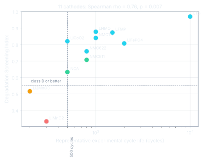

01 · Validation
Three structural descriptors rank durability better than the metal a cathode contains.
The Degradation Screening Index combines delithiation volume strain, the hull energy of the charged phase and the band gap of the discharged structure. On 11 cathodes spanning layered oxides, olivines, spinels and a Li-rich compound, it beats the single-strain descriptor and the metal-identity heuristic it replaces.

| Predictor (n = 11) | Spearman ρ | p |
|---|---|---|
| Structure-resolved DSI, four classes | 0.76 | 0.007 |
| DSI, continuous score | 0.82 | 0.002 |
| Volume strain alone, same binning | 0.55 | 0.08 |
| Metal-identity heuristic | 0.55 | 0.08 |
Robust to leaving any one material out (DSI ahead in 11 of 11 iterations), to removing LTO (ρ = 0.77), and to 24 meV/atom Gaussian noise on the DFT hull energies (median ρ unchanged at 0.76). Bootstrap 95 % CI [0.51, 0.93]. Weights are expert-set, not learned: nested leave-one-out weight fitting on 11 materials collapses to ρ = 0.18.